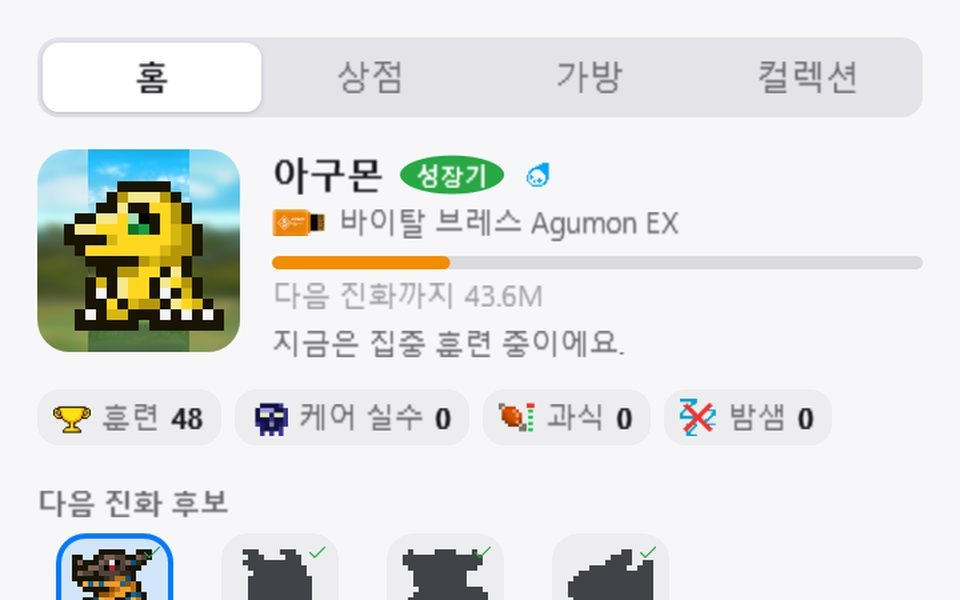

Chan Lee: Scientist. Planner. Builder.
- 01
Scientist.
- M.S. thesis on AI food-safety signals
- Awarded posters at two conferences
- Research on national food-safety projects
- 02
Planner.
- Proposals that won national R&D projects
- Screen specifications for public systems
- Education programs for a district office
- 03
Builder.
- Public systems designed and now running
- Dashboards, films, manuals, decks
- AI-assisted tools and this site


Food scientist, M.S., on the Food AX Team at Cheminet. I take national food-safety projects for the Ministry of Food and Drug Safety from proposal to operating system, design the screens, write the reports, and build the AI-assisted tools my work runs on.
- Now
- Food AX Team, Cheminet
- Degree
- M.S., Chung-Ang University, 2026
- Experience
- 5+ years
- Contact
- leechan829@naver.com
About
Research, planning and operations, production
Research
- M.S. in food safety and regulatory science, Chung-Ang University, 2026
- Thesis: AI detection and prioritization of food-safety signals in online text
- Two award-winning conference posters as first author, 2025
- Culinary research at Sempio; year-one research on a national nutrition AI project
Planning and operations
- Two national R&D proposals selected: KACE and DEFs
- Specification, testing and operations for MFDS information systems: K-HBM, Toxinfo, Laboratory Animal Resource Bank
- Sixteen resident education courses planned and run at an urban regeneration center
- A Sebasi talk planned and scripted; contest decks that won a grand prize and a national award
Production
- Proposals, reports, decks and screen specifications
- Films, from documentary to product demonstration
- Photography, print and newsletters
- Apps, dashboards and screens built with AI tools
AI-assisted workflow
AI tools run under standing rules and a persistent memory, and produce documents, data views and applications that I specify and check.
Work system
- Rules and memoryStanding rules for facts, reporting, revision and checking, and a memory that carries decisions between sessions
- AxPROmeDaily work-report tool, in use at work
- Document buildersK-HBM evaluation deck, report revisions and screen specifications, generated from scripts
- Minutes and Hangul automationMeeting minutes from transcripts; Hangul documents edited without the editor
Data and screens
- KACE dashboardPrototype on the project’s full product data
- DEFs participant appNine-screen design for a time-activity survey
- K-HBM demonstration film89 seconds, for the final evaluation
Products
- DigiTokenBarWindows tray app of my own design that turns AI usage into a virtual-pet game; Mac version in progress
- PokeTokenBar for WindowsWindows port of an open-source tray app
- WeFINShared finance app with its own backend, in use
- This sitePortfolio, built from scripts
Projects
Selected projects
National R&D projects at Cheminet, 2023 to present

MFDS · National R&D · 2025 to 202601
KACE: AI nutrient estimation, a selected national proposal
Proposal, evaluation deck and four-year roadmap for estimating the nutrients of processed foods with AI, and the first year’s research.
Open
NIFDS · National platform · 2024 to 202602
K-HBM: from survey screens to a live platform
Designed the survey tool, led acceptance testing and specified the administrator screens of a national platform now in operation. Two awarded conference presentations.
Open
National environmental-health R&D · 2025 to 202603
DEFs: a digital survey system for exposure factors
Proposal and evaluation deck, system diagrams, example screens, the participant app design and training data for AI recognition. Selected; under way since April 2026.
Open
MFDS · Public system · 2024 to 202604
Toxinfo: running a public toxicity information system
Three years of operations for the Ministry of Food and Drug Safety’s toxicity information system: releases, screens, security checks, reports, and a chatbot pilot with KAIST.
Open
MFDS · Public system · 2024 to 202605
Laboratory Animal Resource Bank: specification and redesign
Specified the 2024 upgrade and planned the 2025 redesign: 38 menus to 20, 200 tables to 85, every planned item delivered.
OpenThesis, education programs, culinary research

Chung-Ang University · M.S. thesis · 202606
Master’s thesis: AI detection of food-safety signals in online text
A fine-tuned model extracts signals more accurately than a large language model at a fraction of the compute, and scores them as five experts do.
Open
Incheon Seo-gu Office · 2016 to 202307
Education programs, planned and run
Planned and ran sixteen resident courses over seventeen months at an urban regeneration center; decks built for the residents’ cooperative won a grand prize and a national award.
Open
Sempio Foods · Culinary research · 201808
Culinary research at Sempio
Ingredient research for the cooking science team, and a Sebasi talk on cooking science planned and scripted end to end, published on YouTube.
OpenProduction and AI

Production · 2017 to 202609
Design, film and photography
Two documentaries, a demonstration film for a national platform, print and photography: production handled in-house, from planning to final cut.
Open
AI-assisted workflow · 202610
Working with AI
Standing rules, a persistent memory and script-based builders make AI a dependable part of daily work. Dashboards, screen designs and applications follow from it.
OpenDocuments
Documents and screens
 KACE proposal presentation
KACE proposal presentation FFQ survey tool project, selection presentation
FFQ survey tool project, selection presentation VeST and FFQ screen designs
VeST and FFQ screen designs Conference posters, 2025
Conference posters, 2025 K-HBM third-year progress report
K-HBM third-year progress report K-HBM final evaluation deck, my section
K-HBM final evaluation deck, my section K-HBM DX Insight Center, administrator screen specification
K-HBM DX Insight Center, administrator screen specification Toxinfo 2024 maintenance proposal, my chapters
Toxinfo 2024 maintenance proposal, my chapters Toxinfo screen designs: search, initial-consonant search, source database, toxicity table
Toxinfo screen designs: search, initial-consonant search, source database, toxicity table Tox chatbot technical description
Tox chatbot technical description Toxinfo 2024 progress report
Toxinfo 2024 progress report Tox chatbot screen design
Tox chatbot screen designJourney
Experience and education

I am a researcher on the Food AX Team at Cheminet, where I plan and run national R&D projects and public information systems, many of them for the Ministry of Food and Drug Safety. Before that I ran education and communications at an urban regeneration center in Incheon, and researched Korean cooking at Sempio, where I also wrote its talks and produced its decks, films and photographs.
In 2026 I completed a master’s degree in food safety with a thesis on AI.
Roles I can take on
- Service and business planning
- R&D planning and project management
- Education planning and operations
- Content, communications and design
- AI adoption in everyday work (AX)
Experience
- Jul 2023 to presentCheminet · Food AX Team · Researcher
- Research staff on national R&D projects, from proposal and selection to execution and final reporting
- Operations of public information systems for the Ministry of Food and Drug Safety
- Proposals and decks that won projects; execution plans and reports
- Planning of web and mobile survey systems: screen specifications, definitions, development review
- Day-to-day contact for clients and partner institutions, including universities and KAIST
- Mar 2022 to Jul 2023Incheon Seo-gu Office · Urban Regeneration Division · Field coordinator (contract, extended)
- Planned and ran resident education programs
- Newsletter editing and design; posters, banners and decks
- Resident grant program: document review and budget processing; community festival support
- Feb 2018 to Aug 2018Sempio Foods · Culinary research mentee program · Researcher (contract)
- Research on Korean food culture; ingredient studies and product review for the cooking science team
- Planning, script and slides for a Sebasi talk
- Research booklet, event films and posters, menu and advertising photographs
Projects at Cheminet
- 2024 to 2026Toxinfo, MFDS toxicity information system: maintenance and operationsOperations lead for the three-year contract; Tox chatbot pilot with KAIST (2024)
- 2024 to 2026Laboratory Animal Resource Bank: upgrade, improvement, operationsScreen specification (2024), execution plan and menu redesign (2025), operations
- 2024 to 2026K-HBM: integrated management model for human biomonitoring data (NIFDS)VeST survey tool build and operations, testing, administrator screens, demo film, report sections
- 2025 to 2029Precision nutrition program for vulnerable groups (MFDS): dietary survey platformSurvey tool operations, screen design, administrator pages
- 2025Food frequency survey method and web survey tool (NIFDS, with Sahmyook University)Web and mobile survey tool: screens, testing, operations; two conference posters
- 2026 to 2029KACE: AI-driven nutrient estimation for processed foodsProposal, roadmap, kickoff deck; year-one research tasks
- 2026 to 2028DEFs: digital exposure-factor method and survey systemProposal; diagrams and example screens; participant app design; training data
- 2023 to 2024LIMS test and inspection data studyParticipating researcher
- 2024Rural Development Administration food data; food nutrient information database; CASA air-quality systemData mapping, operations, screen design
- 2024 to 2026Films for seven public information systemsPlanning, capture, editing
Education
- Sep 2024 to Aug 2026M.S., Food Safety and Regulatory Science, Chung-Ang University Graduate SchoolGPA 4.28 / 4.5
- Mar 2014 to Feb 2022B.S., Bio-convergence Engineering, Sejong University
- 2014Incheon Sangok High School, science track
Thesis and conference presentations
- 2026AI-assisted Detection and Prioritization of Emerging Food Safety Signals from Korean Online Text DataMaster’s thesis, Chung-Ang University
- Nov 2025Development of a digital survey tool for identifying exposure and health effects in human biomonitoringKorean Society of Environmental Health, poster, first author. Poster Presentation Award
- Oct 2025Development of a web and mobile tool for surveying food intakeEast Asian Society of Dietary Life, poster, first author. Poster Encouragement Award
Awards
- 2025Poster Presentation Award, autumn conferenceKorean Society of Environmental Health
- 2025Poster Encouragement Award, autumn conferenceEast Asian Society of Dietary Life
- 2018Top prize, video category, World Friends Korea youth volunteer contestKorea University Council for Social Service
- 2017Sejong volunteer award; Sejong KB creative volunteer corps encouragement awardSejong University
- 2016Top prize, signature product proposal contest (Sejong Box: planning and making)Sejong University
- 2016Best program award, UnivExpo SeoulUnivExpo Seoul organizing committee
- 2016Encouragement award, life science contestSejong University
- 2015Top prize, College of Life Sciences academic festival (a proposal for targeted cancer therapy)Sejong University
Certificates and training
- Oct 2021Barista Level 2Korea Coffee Association
- Jul to Aug 2021NCS courses: design draft development, visual ideationGreen Computer Art Academy
- May 2016HACCP team leader courseKorea Food Information Institute
- 2005 to 2008ITQ Hangul, ITQ PowerPoint, Word Processor Level 2Korea Productivity Center; Korea Chamber of Commerce
Activities
- Aug 2017 to Jan 2018World Friends Korea youth volunteers, KyrgyzstanClasses in my field; publicity film and card news
- Sep 2016 to Feb 2017Sejong KB creative volunteer corpsCampus environment and study motivation projects
- Apr 2016 to Nov 2016Sejong volunteer corpsPlanning and managing student volunteering on campus and nearby
- Mar 2016 to Dec 2016Green Consumers Network, Greenit (5th class)Campaigns for green and safe consumption; UnivExpo
- Jan 2016Sejong overseas volunteers, Oudomxay, LaosCultural exchange and local environment work
- Mar 2014 to Feb 2016Department student council, Bio-convergence Engineering; later class representativeEvents; liaison between the school, faculty and students
Archive